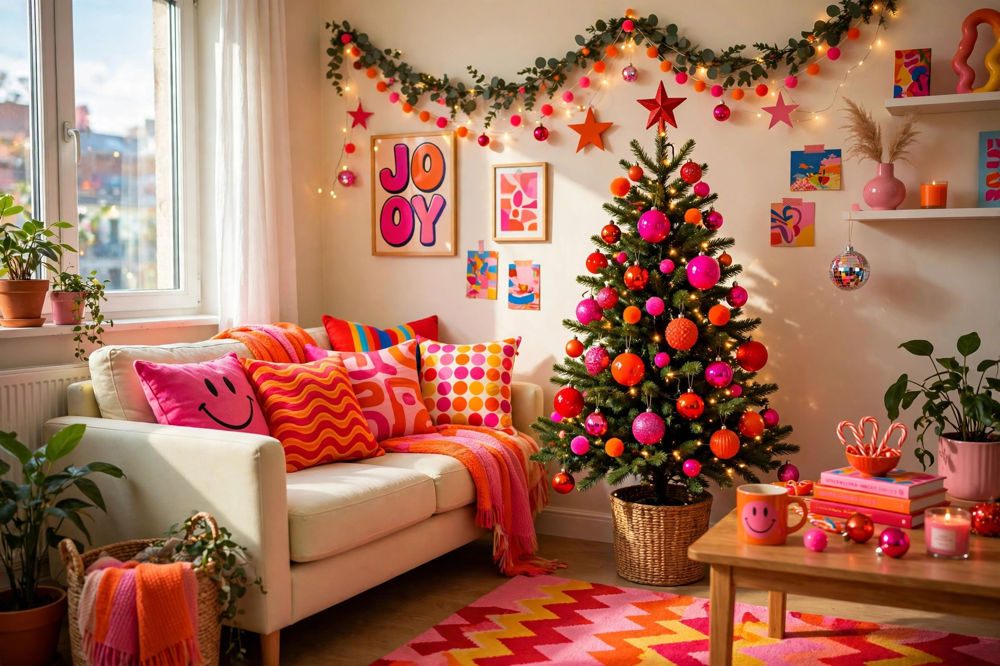

Christmas Decor
Dopamine Christmas Decor — 12 Bright, Joyful Ideas
Intro
Dopamine Christmas is decor designed to make you happy the moment you walk in. It is bright colour, bold pattern and unapologetic joy — hot pink baubles, rainbow lights, orange ribbon, a tree that looks like a party. It is the opposite of the calm, neutral Christmas, and in a small flat it works surprisingly well, because colour makes a small room feel alive instead of cramped.
This guide has 12 dopamine Christmas ideas for a small flat. Each idea lists what it costs. The rule is simple: if a colour makes you smile, it belongs. Start with the brightest thing you own, then add colour until the room feels like a celebration.

1. A rainbow tree: every colour at once — $15–$25
A dopamine tree does not pick one colour — it uses them all. Hang baubles in red, orange, yellow, green, blue and pink, grouped in colour bands from top to bottom, so the tree reads as a rainbow. A pack of mixed-colour baubles costs about $12, and a second pack of mini baubles about $5. The rainbow tree is the loudest decoration in the flat, and it is the one that photographs best. Keep the tree lights warm white so the colours stay true.
2. Hot pink baubles as the star colour — $8–$15
If a full rainbow feels like too much, pick one loud colour and let it lead. Hot pink is the dopamine colour of the year: a pack of hot pink baubles, about $8 for twelve, mixed with gold and white, makes the tree pop without turning it into a rainbow. Add a hot pink bow at the top and a pink ribbon around the tree, and the whole flat gets one strong, joyful accent. Pink works best against white walls and light wood.
3. Colour-blocked ornaments by shelf — $5–$12
Dopamine decor does not stop at the tree. Colour-block the shelves: pink ornaments on one shelf, orange on the next, yellow on the third. Buy small baubles in three bright colours, about $4 a pack, and group them by colour instead of mixing them. The blocks of colour look intentional and bold, like a shop display. It costs almost nothing, and it turns a plain bookcase into a Christmas display.
4. Neon fairy lights in pink and orange — $8–$15
Warm white lights are calm; neon lights are dopamine. A string of pink or orange fairy lights — battery powered, about $8 — wrapped around the tree or along the window frame makes the room glow with colour. Use one colour of neon light per room, not three, so the glow stays joyful instead of chaotic. Neon lights look best in the evening, when the room is dark and the colour fills the walls.
5. A bright orange throw and cushions — $12–$20
The fastest dopamine fix in a small flat is textiles. Swap the neutral throw for a bright orange one, and the plain cushions for hot pink and yellow ones. A bright throw costs about $12 and two cushion covers about $5 each. The textiles do the work of ten decorations, they are useful all winter, and they come off the sofa in January without a single hook or nail. Colour on the sofa is the easiest dopamine decor there is.
6. A disco-ball ornament on the tree — $5–$10
One disco ball on the tree — a small mirrored ball about 8 cm across — throws tiny spots of light around the room when the fairy lights hit it. It costs about $5 and does more than any bauble: it moves the light. Hang it near the top of the tree, where the lights are densest, and the whole room sparkles. A disco ball is the smallest dopamine decoration and the one guests notice first, because the light spots dance on the ceiling.
7. Bold wrapping paper as wall art — $3–$8
Bright wrapping paper is cheap art. Frame three sheets of bold wrapping paper — stripes, polka dots, rainbows — in simple frames, or stick them to the wall with washi tape, and the flat gets three pieces of Christmas art for the price of one roll. A roll of bold wrapping paper costs about $4. Change the paper each year and the art is always new. It is the cheapest way to put colour on a wall that cannot be painted.
8. A colourful garland on the door — $10–$18
A dopamine garland is not pine — it is colour. String bright baubles, pom-poms and tinsel in pink, orange and gold onto a wire ring or a length of ribbon, and hang it on the front door. A bag of mixed bright baubles costs about $10 and a bag of pom-poms about $4. The garland tells everyone in the building that this flat is celebrating, and it is the first thing you see when you come home. It is also the easiest decoration to make with children.
9. Rainbow candles on the table — $6–$12
A row of candles in rainbow colours — red, orange, yellow, green, blue — down the middle of the table turns dinner into a party. Battery candles in bright colours cost about $10 for a set of six, and they are safe around children and cats. Put them in a straight line on a tray, with a few pinecones between them for contrast. The rainbow candles stay on the table all December, and they light up every meal.
10. A bright tree skirt in a bold pattern — $8–$15
The tree skirt is the most ignored decoration, and the easiest dopamine win. Swap the plain skirt for a bright one — bold stripes, big polka dots or a rainbow pattern — and the base of the tree becomes a decoration in itself. A bright tree skirt costs about $12 in a discount store, or make one from a metre of bold fabric for about $8. It hides the tree stand, covers the floor and adds a block of colour at the bottom of the room.
11. Colourful stockings, one colour each — $8–$15
Dopamine stockings are not matching — each person gets a different bright colour. One hot pink, one orange, one yellow, one turquoise. Buy plain stockings in bright colours for about $3 each and hang them in a row on the mantel. The row of colour looks like a party banner, and nobody mixes up their stocking. Add a pom-pom to the top of each one for an extra dose of joy.
12. A "joy corner" by the window — $5–$10
Pick one corner of the flat — by the window is best — and make it the joy corner. Put the brightest things there: the disco ball, the neon lights, the colourful garland and one bright cushion. Everything else in the flat stays calm, and the joy corner carries the whole dopamine mood. It costs about $8 for a string of neon lights and a few pom-poms. One bright corner is enough; the whole flat does not need to shout.
Conclusion
Dopamine Christmas is about colour that makes you happy: a rainbow tree, hot pink baubles, neon lights, bright textiles and one disco ball. In a small flat, colour is the cheapest decoration and the most powerful — it needs no space, no nails and no budget. Pick your brightest colour, put it where you will see it first thing in the morning, and let the flat celebrate.
Budget recap
- Mixed-colour baubles + neon lights: ~$20 - Bright throw + cushion covers: ~$20 - Disco ball + pom-poms: ~$9
Total for a dopamine Christmas: ~$35–$50 — start with the rainbow tree, then the textiles.
Pinterest pin titles
- Dopamine Christmas Decor — 12 Bright, Joyful Ideas
- 12 Dopamine Christmas Ideas That Make a Small Flat Feel Happy
- Bright, Bold & Joyful: 12 Dopamine Christmas Decor Ideas